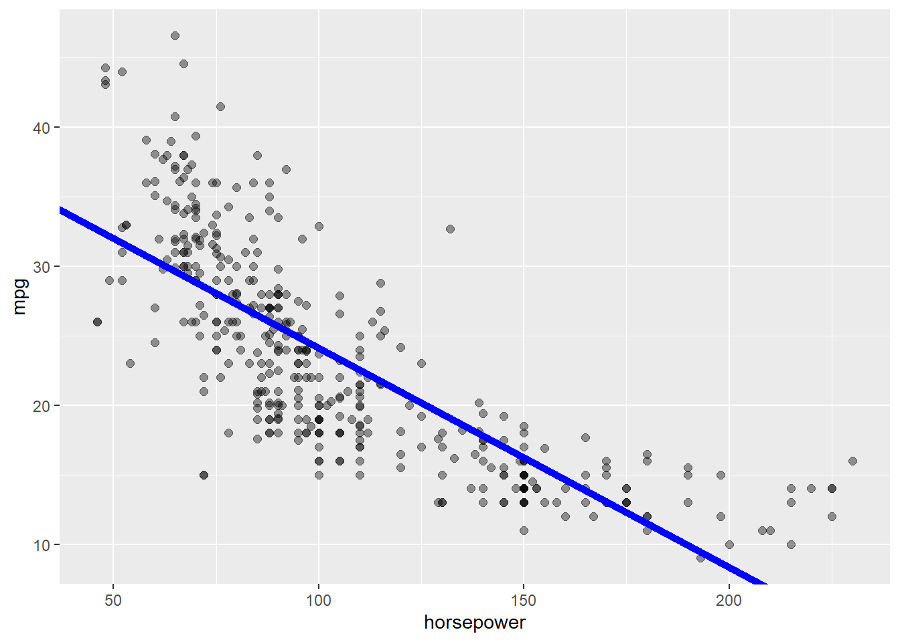
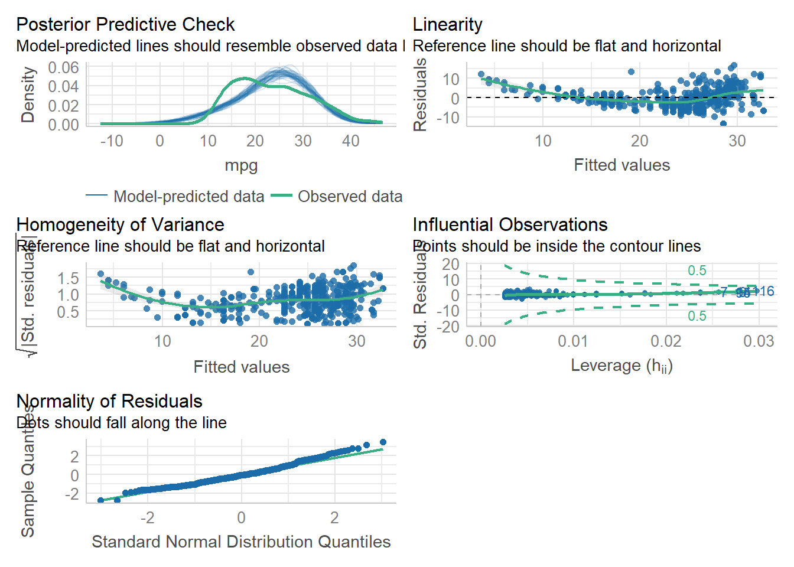

library(ISLR2)
library(tidymodels)
library(dplyr)Linear Regression
Module 3 - Activity 4
Linear Regression
Of the models with a convex representation of their parametricestimation, generalized linear models (GLM) are a crucial case.The two most frequent examples of GLM are linear regression andlogistic regression. Therefore, in this activity, several linear regressionand logistic regression exercises will be solved with R software andsome of its packages.
Activities Problem 1: Warm Up
1. Section 3.7 Problem 8.
This question involves the use of simple linear regression on the Auto data set.
a) Use the lm() function to perform a simple linear regression with mpg as the response and horsepower as the predictor. Use the summary() function to print the results. Comment on the output.
Adding the necessary libraries
Loading dataframe
auto <- Auto
head(auto) mpg cylinders displacement horsepower weight acceleration year origin
1 18 8 307 130 3504 12.0 70 1
2 15 8 350 165 3693 11.5 70 1
3 18 8 318 150 3436 11.0 70 1
4 16 8 304 150 3433 12.0 70 1
5 17 8 302 140 3449 10.5 70 1
6 15 8 429 198 4341 10.0 70 1
name
1 chevrolet chevelle malibu
2 buick skylark 320
3 plymouth satellite
4 amc rebel sst
5 ford torino
6 ford galaxie 500The Auto df counts with 9 columns that show information of different models of vehicles. For the present exercise is intended to evaluate if exists any relationship
linearmodelauto <- lm(mpg ~ horsepower, data = auto)
linearmodelauto
Call:
lm(formula = mpg ~ horsepower, data = auto)
Coefficients:
(Intercept) horsepower
39.9359 -0.1578 Is there a relationship between the predictor and the response?
Yes there is a relationship between the variables
summary(linearmodelauto)
Call:
lm(formula = mpg ~ horsepower, data = auto)
Residuals:
Min 1Q Median 3Q Max
-13.5710 -3.2592 -0.3435 2.7630 16.9240
Coefficients:
Estimate Std. Error t value Pr(>|t|)
(Intercept) 39.935861 0.717499 55.66 <2e-16 ***
horsepower -0.157845 0.006446 -24.49 <2e-16 ***
---
Signif. codes: 0 '***' 0.001 '**' 0.01 '*' 0.05 '.' 0.1 ' ' 1
Residual standard error: 4.906 on 390 degrees of freedom
Multiple R-squared: 0.6059, Adjusted R-squared: 0.6049
F-statistic: 599.7 on 1 and 390 DF, p-value: < 2.2e-16How strong is the relationship between the predictor and the response
With the p values of the model (<0.0001) we can assume that the model is significant to explain the relationship between our variables . Also the \(R^{2}\) of 60% indicates that there is a highly correlation between this variables
Is the relationship between the predictor and the response positive or negative?
The relationship is negative
What is the predicted mpg associated with a horsepower of 98? What are the associated 95 % confidence and prediction intervals?
predict(linearmodelauto, tibble(horsepower=98), interval = "confidence") fit lwr upr
1 24.46708 23.97308 24.96108- Plot the response and the predictor. Use the abline() functionto display the least squares regression line.
auto %>%
ggplot(aes(x = horsepower)) +
geom_point(aes(y = mpg), size = 2, alpha = 0.4) +
geom_abline(slope = coef(linearmodelauto)["horsepower"],
intercept = coef(linearmodelauto)["(Intercept)"],
size = 2, color = "blue")
c) Use the plot() function to produce diagnostic plots of the least squares regression fit. Comment on any problems you see with the fit.
linearmodelauto %>% performance::check_model()